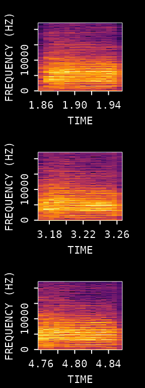
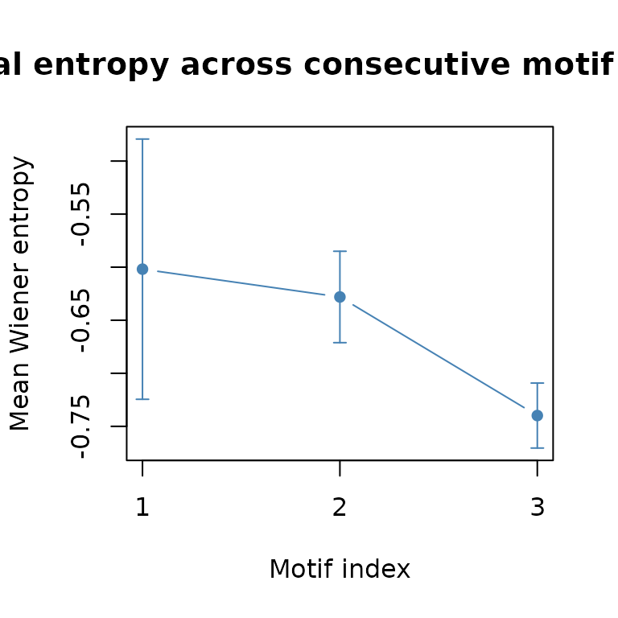
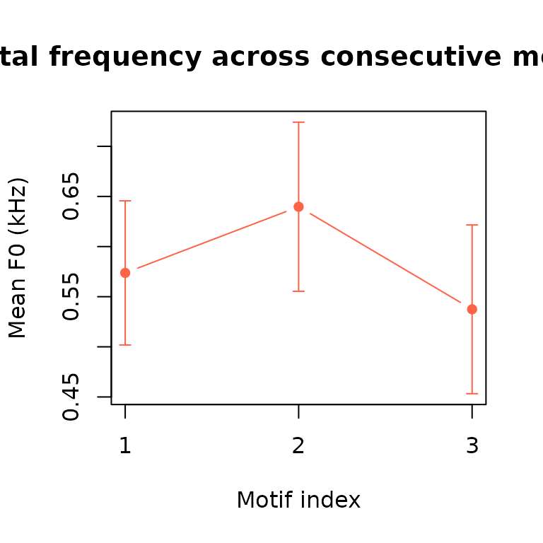
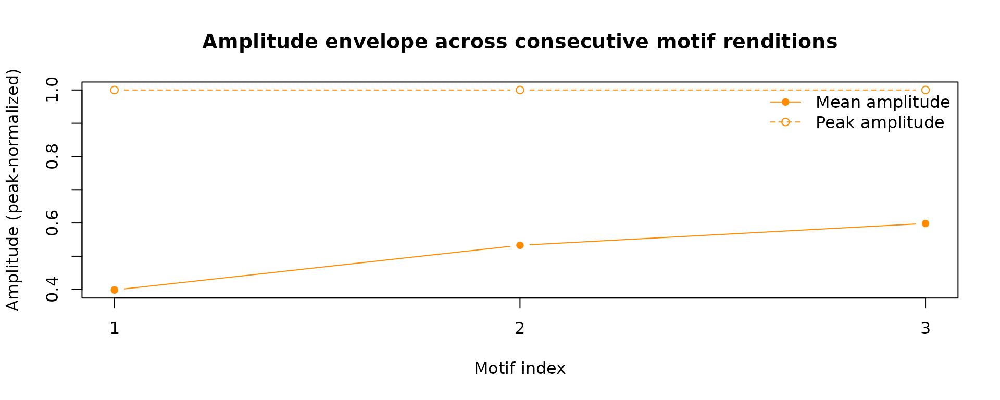

Advanced Acoustic Feature Analysis
Source:vignettes/advanced_acoustic_feature_analysis.Rmd
advanced_acoustic_feature_analysis.RmdIntroduction
This vignette shows how to detect motifs in a single recording and extract quantitative acoustic features from a selected syllable across repeated renditions.
Prerequisites: Before reading this vignette, we recommend completing:
What you will learn:
- How to recap motif detection in a few key lines
- How to define a syllable window of interest relative to motif boundaries
- How to iterate
spectral_entropy(),FF(), andamp_env()over all motifs to build a per-motif feature table - How to summarize and visualize feature trajectories across renditions
Overview.
The workflow has three steps:
- Detect repeated motifs in the recording
- Define a consistent syllable window within each motif
- Measure entropy, pitch, and amplitude for that window and summarize the results across renditions
Setup
library(ASAP)
#> ASAP v0.3.5.9000 loaded.
wav_file <- system.file("extdata", "zf_example.wav", package = "ASAP")
wav_dir <- dirname(wav_file)Motif Detection
The visualization and parameter-tuning steps are covered in detail in
the Motif Detection vignette. Here we
recap only the core lines needed to produce the motifs
table that drives Phase 2.
# 1. Extract a reference clip and build a template from syllable "d"
clip_path <- create_audio_clip(wav_file, start_time = 1, end_time = 2.5)
#> Song clip clip_zf_example.wav is generated.
template <- create_template(clip_path,
template_name = "d",
start_time = 0.72,
end_time = 0.84,
freq_min = 1,
freq_max = 10,
write_template = FALSE
)
#>
#> Automatic point selection.
#>
#> Done.
# 2. Detect template occurrences across the full recording
template_matches <- detect_template(
x = wav_file,
template = template,
proximity_window = 1,
save_plot = FALSE
)
# 3. Expand each detection into full-motif boundaries
motifs <- find_motif(template_matches,
pre_time = 0.7,
lag_time = 0.5,
wav_dir = wav_dir
)
#> Processed zf_example.wav: 3/3 valid motifs (0 excluded)
#> Total valid motifs found: 3 (excluded: 0)
knitr::kable(motifs, digits = 3)| filename | detection_time | start_time | end_time | duration |
|---|---|---|---|---|
| zf_example.wav | 1.76 | 1.06 | 2.26 | 1.2 |
| zf_example.wav | 3.07 | 2.37 | 3.57 | 1.2 |
| zf_example.wav | 4.66 | 3.96 | 5.16 | 1.2 |
Selecting a Syllable Window of Interest
Rather than analyzing the entire motif, we focus on a specific
syllable to reduce noise and make comparisons more precise. We define
the syllable window as a fixed offset relative to each motif’s
start_time.
Based on visual inspection of the motif spectrogram (see the Motif Detection vignette), syllable “e” falls roughly 0.78–0.85 s after the motif onset. We encode these offsets once so they are applied consistently across every motif row.
# Offsets from each motif's start_time (seconds) — syllable "e"
syl_pre <- 0.8 # syllable onset relative to motif start
syl_post <- 0.85 # syllable offset relative to motif start
# Build a per-motif data frame for the syllable window
syl_windows <- motifs
syl_windows$start_time <- motifs$start_time + syl_pre
syl_windows$end_time <- motifs$start_time + syl_post
syl_windows$duration <- syl_post - syl_pre
knitr::kable(syl_windows[, c("filename", "start_time", "end_time", "duration")],
digits = 3
)| filename | start_time | end_time | duration |
|---|---|---|---|
| zf_example.wav | 1.86 | 1.91 | 0.05 |
| zf_example.wav | 3.17 | 3.22 | 0.05 |
| zf_example.wav | 4.76 | 4.81 | 0.05 |
Use visualize_segments() to inspect the syllable “e”
window across all detected motifs at once. Consistent
spectrogram structure across panels confirms the offset is correctly
aligned before committing it to the feature-extraction loop.
visualize_segments(syl_windows,
wav_dir = wav_dir,
n_samples = nrow(syl_windows)
)
#> Song visualization completed for: zf_example.wav
#> Song visualization completed for: zf_example.wav
#> Song visualization completed for: zf_example.wavFeature Extraction Across All Motifs
We now iterate over every row of syl_windows and compute
three features. Each function accepts a single-row data frame plus
wav_dir, so the pattern is uniform for all three.
3a. Spectral Entropy
entropy_results <- vector("list", nrow(syl_windows))
for (i in seq_len(nrow(syl_windows))) {
row <- syl_windows[i, , drop = FALSE]
# spectral_entropy() returns a 2-column matrix: [time, entropy]
ent_mat <- spectral_entropy(
row,
wav_dir = wav_dir,
method = "wiener",
normalize = FALSE,
plot = FALSE
)
n_frames <- sum(!is.na(ent_mat[, 2]))
entropy_results[[i]] <- data.frame(
motif_index = i,
start_time = row$start_time,
mean_entropy = mean(ent_mat[, 2], na.rm = TRUE),
sem_entropy = sd(ent_mat[, 2], na.rm = TRUE) / sqrt(n_frames)
)
}
entropy_df <- do.call(rbind, entropy_results)
knitr::kable(entropy_df, digits = 4)| motif_index | start_time | mean_entropy | sem_entropy |
|---|---|---|---|
| 1 | 1.86 | -0.6019 | 0.1226 |
| 2 | 3.17 | -0.6281 | 0.0431 |
| 3 | 4.76 | -0.7398 | 0.0306 |
3b. Fundamental Frequency
ff_results <- vector("list", nrow(syl_windows))
for (i in seq_len(nrow(syl_windows))) {
row <- syl_windows[i, , drop = FALSE]
# FF() returns a 2-column matrix: [time, frequency (kHz)]
ff_mat <- FF(
row,
wav_dir = wav_dir,
method = "cepstrum",
fmax = 1000,
threshold = 10,
plot = FALSE
)
# Exclude zeros (unvoiced frames)
voiced <- ff_mat[ff_mat[, 2] > 0, 2]
ff_results[[i]] <- data.frame(
motif_index = i,
start_time = row$start_time,
mean_ff_kHz = ifelse(length(voiced) > 0, mean(voiced, na.rm = TRUE), NA_real_),
sem_ff_kHz = ifelse(length(voiced) > 0, sd(voiced, na.rm = TRUE) / sqrt(length(voiced)), NA_real_)
)
}
ff_df <- do.call(rbind, ff_results)
knitr::kable(ff_df, digits = 4)| motif_index | start_time | mean_ff_kHz | sem_ff_kHz |
|---|---|---|---|
| 1 | 1.86 | 0.5737 | 0.0719 |
| 2 | 3.17 | 0.6397 | 0.0844 |
| 3 | 4.76 | 0.5374 | 0.0841 |
3c. Amplitude Envelope
We summarize the envelope by its peak amplitude and the time-averaged RMS, which together capture both the loudness ceiling and the mean energy.
env_results <- vector("list", nrow(syl_windows))
for (i in seq_len(nrow(syl_windows))) {
row <- syl_windows[i, , drop = FALSE]
# amp_env() returns a numeric vector of envelope values
env <- amp_env(
row,
wav_dir = wav_dir,
msmooth = c(256, 50),
plot = FALSE
)
n_env <- sum(!is.na(env))
env_results[[i]] <- data.frame(
motif_index = i,
start_time = row$start_time,
mean_amp = mean(env, na.rm = TRUE),
sem_amp = sd(env, na.rm = TRUE) / sqrt(n_env),
rms_amp = sqrt(mean(env^2, na.rm = TRUE))
)
}
env_df <- do.call(rbind, env_results)
knitr::kable(env_df, digits = 4)| motif_index | start_time | mean_amp | sem_amp | rms_amp |
|---|---|---|---|---|
| 1 | 1.86 | 3853.205 | 667.5323 | 4640.170 |
| 2 | 3.17 | 4366.645 | 520.8094 | 4810.013 |
| 3 | 4.76 | 6192.217 | 483.9166 | 6469.635 |
Combine and Visualize Feature Trajectories
Merge all three feature tables and look at how each metric changes across consecutive motif renditions.
feature_df <- Reduce(
function(a, b) merge(a, b, by = c("motif_index", "start_time")),
list(entropy_df, ff_df, env_df)
)
knitr::kable(feature_df, digits = 4)| motif_index | start_time | mean_entropy | sem_entropy | mean_ff_kHz | sem_ff_kHz | mean_amp | sem_amp | rms_amp |
|---|---|---|---|---|---|---|---|---|
| 1 | 1.86 | -0.6019 | 0.1226 | 0.5737 | 0.0719 | 3853.205 | 667.5323 | 4640.170 |
| 2 | 3.17 | -0.6281 | 0.0431 | 0.6397 | 0.0844 | 4366.645 | 520.8094 | 4810.013 |
| 3 | 4.76 | -0.7398 | 0.0306 | 0.5374 | 0.0841 | 6192.217 | 483.9166 | 6469.635 |
Average entropy across renditions
plot(
feature_df$motif_index,
feature_df$mean_entropy,
type = "b",
pch = 16,
col = "steelblue",
ylim = range(c(feature_df$mean_entropy - feature_df$sem_entropy,
feature_df$mean_entropy + feature_df$sem_entropy), na.rm = TRUE),
xlab = "Motif index",
ylab = "Mean Wiener entropy",
main = "Spectral entropy across consecutive motif renditions",
xaxt = "n"
)
axis(1, at = feature_df$motif_index)
# ±1 SEM ribbon
arrows(
x0 = feature_df$motif_index,
y0 = feature_df$mean_entropy - feature_df$sem_entropy,
y1 = feature_df$mean_entropy + feature_df$sem_entropy,
length = 0.04,
angle = 90,
code = 3,
col = "steelblue"
)
Mean fundamental frequency across renditions
plot(
feature_df$motif_index,
feature_df$mean_ff_kHz,
type = "b",
pch = 16,
col = "tomato",
ylim = range(c(feature_df$mean_ff_kHz - feature_df$sem_ff_kHz,
feature_df$mean_ff_kHz + feature_df$sem_ff_kHz), na.rm = TRUE),
xlab = "Motif index",
ylab = "Mean F0 (kHz)",
main = "Fundamental frequency across consecutive motif renditions",
xaxt = "n"
)
axis(1, at = feature_df$motif_index)
arrows(
x0 = feature_df$motif_index,
y0 = feature_df$mean_ff_kHz - feature_df$sem_ff_kHz,
y1 = feature_df$mean_ff_kHz + feature_df$sem_ff_kHz,
length = 0.04,
angle = 90,
code = 3,
col = "tomato"
)
Envelope amplitude across renditions
plot(
feature_df$motif_index,
feature_df$mean_amp,
type = "b",
pch = 16,
col = "darkorange",
ylim = range(c(feature_df$mean_amp - feature_df$sem_amp,
feature_df$mean_amp + feature_df$sem_amp), na.rm = TRUE),
xlab = "Motif index",
ylab = "Mean Amplitude",
main = "Amplitude envelope across consecutive motif renditions",
xaxt = "n"
)
axis(1, at = feature_df$motif_index)
arrows(
x0 = feature_df$motif_index,
y0 = feature_df$mean_amp - feature_df$sem_amp,
y1 = feature_df$mean_amp + feature_df$sem_amp,
length = 0.04,
angle = 90,
code = 3,
col = "darkorange"
)
Exporting the Feature Table
The combined feature_df is a standard R data frame ready
for any downstream analysis.
# Save as CSV for use in other tools or scripts
write.csv(feature_df,
file = "syllable_features.csv",
row.names = FALSE
)Summary
This vignette demonstrated a complete single-recording pipeline that bridges motif detection and acoustic feature analysis:
| Phase | Key steps | Output |
|---|---|---|
| Motif detection |
detect_template() → find_motif()
|
motifs data frame |
| Syllable window | Fixed offset from start_time
|
syl_windows data frame |
| Entropy |
spectral_entropy() per row |
Mean ± SEM per motif |
| Pitch |
FF() per row, voiced frames only |
Mean F0 ± SEM per motif |
| Envelope |
amp_env() per row |
Mean ± SEM, RMS per motif |
| Visualization | Base R plot()
|
Trajectory plots across renditions |
The same pattern — iterate per row, collect scalar summaries, bind
into a data frame — scales directly to larger datasets by replacing the
for loop with lapply() or
parallel_apply(), or by passing a multi-row data frame
directly to spectral_entropy() or FF().
Session Info
sessionInfo()
#> R version 4.5.3 (2026-03-11)
#> Platform: x86_64-pc-linux-gnu
#> Running under: Ubuntu 24.04.4 LTS
#>
#> Matrix products: default
#> BLAS: /usr/lib/x86_64-linux-gnu/openblas-pthread/libblas.so.3
#> LAPACK: /usr/lib/x86_64-linux-gnu/openblas-pthread/libopenblasp-r0.3.26.so; LAPACK version 3.12.0
#>
#> locale:
#> [1] LC_CTYPE=C.UTF-8 LC_NUMERIC=C LC_TIME=C.UTF-8
#> [4] LC_COLLATE=C.UTF-8 LC_MONETARY=C.UTF-8 LC_MESSAGES=C.UTF-8
#> [7] LC_PAPER=C.UTF-8 LC_NAME=C LC_ADDRESS=C
#> [10] LC_TELEPHONE=C LC_MEASUREMENT=C.UTF-8 LC_IDENTIFICATION=C
#>
#> time zone: UTC
#> tzcode source: system (glibc)
#>
#> attached base packages:
#> [1] stats graphics grDevices utils datasets methods base
#>
#> other attached packages:
#> [1] ASAP_0.3.5.9000
#>
#> loaded via a namespace (and not attached):
#> [1] sass_0.4.10 generics_0.1.4 tidyr_1.3.2 lattice_0.22-9
#> [5] digest_0.6.39 magrittr_2.0.5 evaluate_1.0.5 grid_4.5.3
#> [9] RColorBrewer_1.1-3 fastmap_1.2.0 jsonlite_2.0.0 Matrix_1.7-4
#> [13] monitoR_1.2 tuneR_1.4.7 purrr_1.2.1 scales_1.4.0
#> [17] pbapply_1.7-4 textshaping_1.0.5 jquerylib_0.1.4 cli_3.6.5
#> [21] rlang_1.1.7 pbmcapply_1.5.1 fftw_1.0-9 withr_3.0.2
#> [25] seewave_2.2.4 cachem_1.1.0 yaml_2.3.12 av_0.9.6
#> [29] tools_4.5.3 parallel_4.5.3 dplyr_1.2.1 ggplot2_4.0.2
#> [33] reticulate_1.45.0 vctrs_0.7.2 R6_2.6.1 png_0.1-9
#> [37] lifecycle_1.0.5 fs_2.0.1 MASS_7.3-65 ragg_1.5.2
#> [41] pkgconfig_2.0.3 desc_1.4.3 pkgdown_2.2.0 pillar_1.11.1
#> [45] bslib_0.10.0 gtable_0.3.6 glue_1.8.0 Rcpp_1.1.1
#> [49] systemfonts_1.3.2 xfun_0.57 tibble_3.3.1 tidyselect_1.2.1
#> [53] knitr_1.51 farver_2.1.2 htmltools_0.5.9 patchwork_1.3.2
#> [57] rmarkdown_2.31 signal_1.8-1 compiler_4.5.3 S7_0.2.1